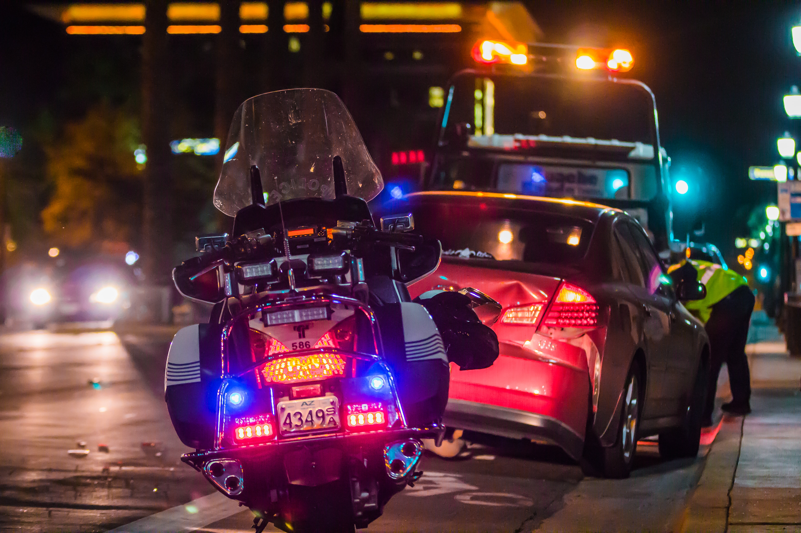

Story
Take The Pledge
Are you a driver between the age of 15 and 20? Driving is such an exciting and empowering skill, but it’s also a dangerous one. Young drivers like yourself are the most at risk for crashes, and one of the main culprits is texting while driving.
Storie
Many of us assume we can multitask while driving, send a text quickly, surf the internet for an address, or answer a call. Repercussions are an afterthought, but those quick seconds can change everything. Here are real-life stories and statistics that show the horrors, devastation, and ramifications of smartphone distraction:
A 17-year-old girl crashed on a car accident from Alabaster, Ala. She died in a highway crash in February 2018. According to reports, the driver collided into a trailer on a local highway. The local coroner said that texting played a role.
In Minnesota, a 17-year-old driver killed a father and his 10-year-old daughter when the driver ran a red light because she was allegedly texting. The teen sentenced to four years’ probation and more than 200 hours of community service. However, if she breaks the terms of her probation, she could serve more prison time.

In 2013, Newsday reported that texting and driving was now the number one killer of teen drivers on the road. The article cites statistics from Cohen Children’s Medical Center in New Hyde Park that an estimated 3,000 teens die each year because of distracted driving-related to texting.
A 19-year-old Kansas State University student died because of one letter: “k.” The message not sent, but it allegedly preceded the crash that caused her death. The recipient of the message was the driver’s sister who now helps educate teens about the dangers of texting and driving.
A teen in Washington died after she allegedly was distracted by an incoming text while driving. Her car drove under the wheels of a logging truck. The teen’s mother now helps teens understand the dangers of driving distracted and uses a video that recreates her daughter’s crash to illustrate the horror of what those distractions may cause on the road.
A driver who allegedly was texting behind the wheel hit seven-year-old Xzavier Davis-Bilbo, dragging him nearly 20 feet in the process. The crash paralyzed Davis-Bilbo, and he spent four and a half months in the intensive care unit. He will never walk again.